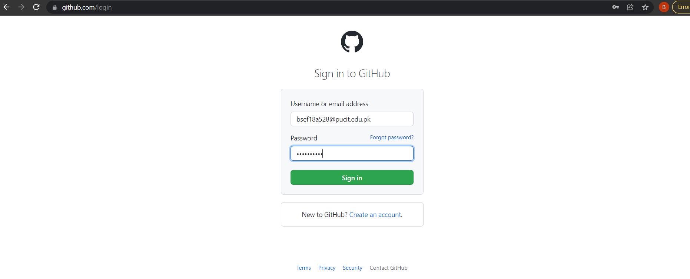
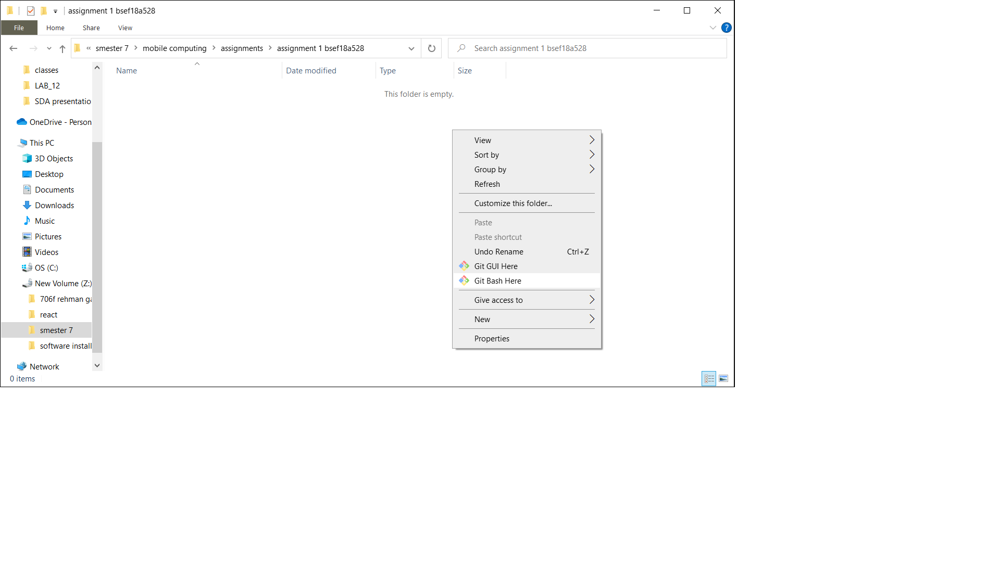
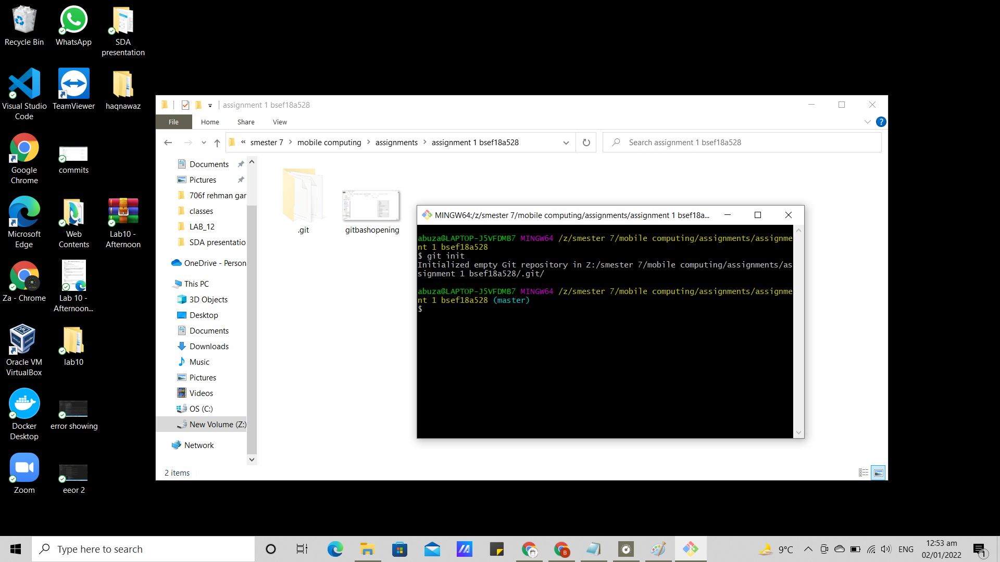
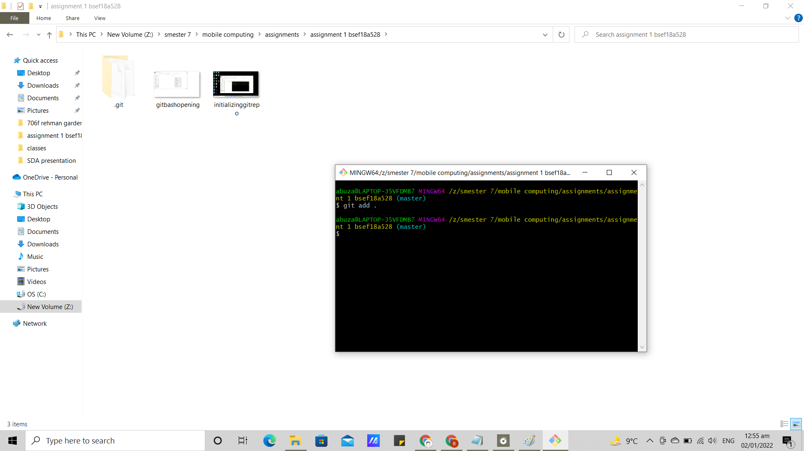
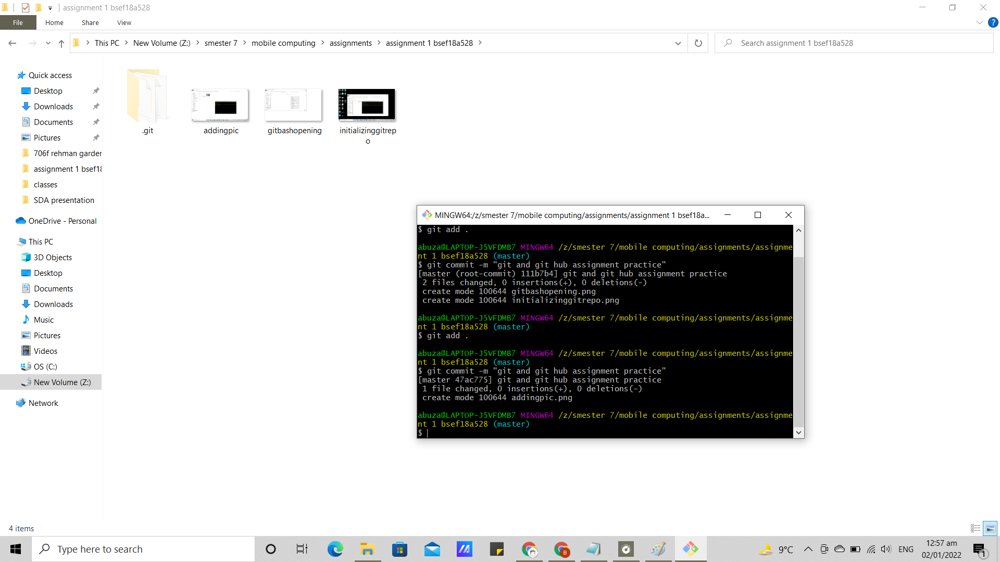
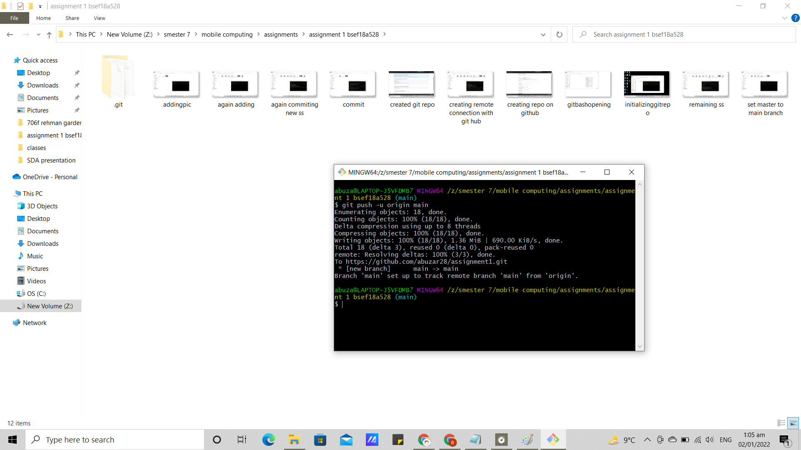
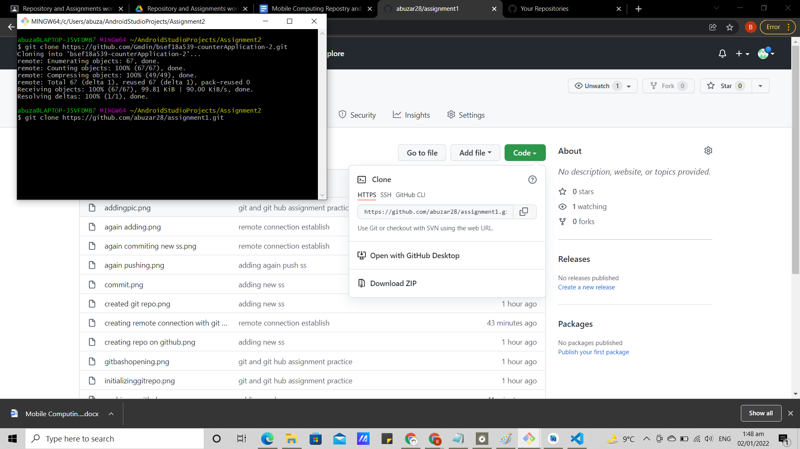

This page will explain the basics of github's version control system
1. Login to your github account
2.creat new repo on github.

3.opening git bash on specific folder
4.git intializing
5. adding screen shot
6.git commit
7.establish remote connection

8.adjusting branch

9. push on git hub
10. After changing or adding more code we can simply repeat the step no 5 , 6 and 9 and see changing in the repository as shown in figure.

12. Finally, we can copy our project's url to anybody and they can the copy the project to their own system.
